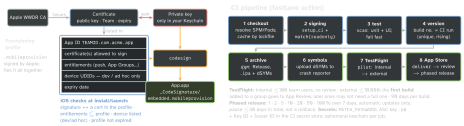

build · folio
In one line: A build runs on a device only if it is signed with a certificate’s private key and carries a provisioning profile that lists that certificate, the App ID, the entitlements and (dev/ad hoc) the device. CI breaks because the runner has none of that — fastlane match + an App Store Connect API key make signing and upload reproducible and non-interactive.
Download PDF Print view LaTeX source


Profile types
| Profile | Certificate | Devices | Use |
|---|---|---|---|
| Development | Apple Development | listed UDIDs | run + debug (get-task-allow) |
| Ad Hoc | Apple Distribution | listed UDIDs | QA outside TestFlight |
| App Store | Apple Distribution | none | TestFlight + App Store |
| Enterprise | In-House (Enterprise Program) | none | internal staff only, never public |
How it works
- The profile picks the channel, not the certificate: one Distribution cert signs both Ad Hoc and App Store builds.
- Capability flow: enable it on the App ID → regenerate the profile → add it to
.entitlements. All three must agree. - Automatic signing = Xcode creates certs/profiles with a logged-in Apple ID: fine locally, flaky on CI. Manual = named profile + identity: reproducible.
- match stores certs + profiles in git, S3, Google Cloud or GitLab Secure Files and installs the same ones on every laptop and runner — encrypted with
MATCH_PASSWORDin git and S3 only; the others rely on bucket access.readonly: trueon CI so it never creates or revokes. iOS types:development,adhoc,appstore,enterprise. - ASC API key = Issuer ID + Key ID +
.p8(downloadable once); signs an ES256 JWT that lives ≤20 min, reused until it expires. No password, no 2FA, role-scoped, revocable; a team key — individual keys cannot reach the provisioning endpoints. Apple ID auth needs 2FA sessions that expire(unverified). - Version vs build:
CFBundleShortVersionString(2.4.0, user-facing) vsCFBundleVersion(1387) — unique and increasing per upload of a version(unverified). - Build once, promote the artifact: the
.ipayou tested in TestFlight is the one you submit; never rebuild for release. - Caching: key SPM/Pods caches on
Package.resolved/Podfile.lock+ Xcode version — keyed on branch only, they go stale.
Remember
“Key + Cert + Profile = permission to run; match shares them, the API key uploads them.”
Example — Fastfile (Ruby)
lane :beta do
setup_ci # temp unlocked keychain on CI
key = app_store_connect_api_key(key_id: ENV["ASC_KEY_ID"],
issuer_id: ENV["ASC_ISSUER_ID"], key_content: ENV["ASC_P8"])
match(type: "appstore", readonly: true, api_key: key)
run_tests(scheme: "App") # scan
increment_build_number(build_number: ENV["CI_RUN_NUMBER"])
build_app(scheme: "App", export_method: "app-store") # gym
upload_symbols_to_crashlytics # dSYMs
upload_to_testflight(api_key: key) # pilot
endTraps
- “Works on my Mac, fails on CI”: your Keychain has the private key; the runner doesn’t. A
.cerwithout its private key cannot sign. errSecInternalComponent/ “User interaction is not allowed” = locked keychain or key ACL(unverified) →setup_ciorsecurity set-key-partition-list.- Automatic signing on CI keeps minting distribution certs until the account limit(unverified).
- Capability works in Debug, missing in the App Store build → the distribution profile was not regenerated after enabling it on the App ID.
- Duplicate
CFBundleVersion→ App Store Connect rejects the upload(unverified). - Never commit
.p12/.p8in plain text orechoa secret in a job — CI logs are kept. - Phased release can be paused, not rolled back; a bad build needs a new build.